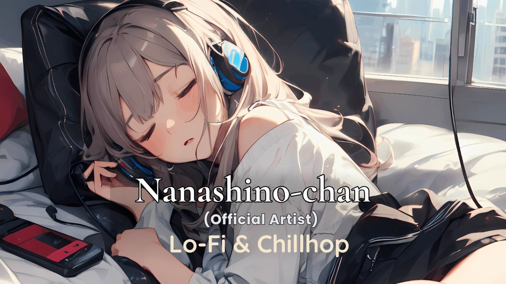
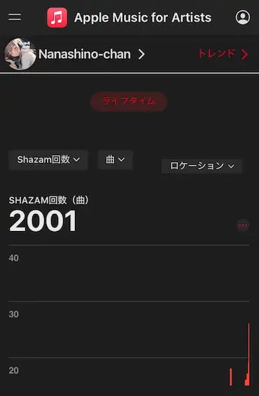
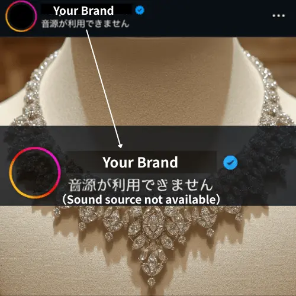

Simple rules for using Nanashino-chan music in your content.
All music on this site is 100% owned and controlled by Nanashino-chan.
This includes all rights related to the composition, production, and distribution.
Unauthorized use outside the stated guidelines may result in copyright actions.
日本語：
本サイトで提供されている楽曲は、すべてNanashino-chanが100％の権利を保有・管理しています。
楽曲の著作権・制作・配信に関するすべての権利が含まれます。
ガイドライン外での使用は、著作権対応の対象となる場合があります。
Nanashino-chan is a Lo-Fi music creator whose tracks are used by creators worldwide.

Lo-Fi music creator used by creators worldwide
Highlights:

Proof of 2000+ Shazam searches
These tracks are officially distributed and designed for safe use across platforms.
日本語：
Nanashino-chanは、世界中のクリエイターに使用されているLo-Fi音楽アーティストです。
実績：
・Shazam検索 2000回以上
・海外クリエイターによる使用実績
・BAZAAR × Cartierなどブランド案件での使用実績
本楽曲はすべて正規配信されており、安心してご利用いただけます。
"Free to use" does NOT mean unrestricted use.
This music is free for organic content creation only.
Allowed:
Not allowed:
For advertising, commercial campaigns, or business use, please contact for proper licensing.
Unauthorized redistribution or re-upload is strictly prohibited.
In case of violation, the following actions may be taken:
・Content removal requests
・Copyright claims via platform systems
・Request for appropriate licensing fees (minimum $19 per track)
All tracks are monitored for unauthorized use.
日本語：
「無料で使える」とは、完全に自由に使えるという意味ではありません。
本楽曲は、オーガニック投稿（通常投稿）での利用に限り使用可能です。
使用可能：
・YouTube動画（収益化含む）
・TikTok / Instagram / Facebookの通常投稿
・個人・クリエイター用途
禁止事項：
・広告利用（YouTube広告 / TikTok広告 / Meta広告）
・再配布・再アップロード
・音源単体での配布・販売
・AI学習用途への使用
広告・商用利用・ビジネス用途については、必ずライセンスをご確認のうえお問い合わせください。
無断での再配布または再アップロードは禁止されています。
違反が確認された場合、以下の対応を行う場合があります：
・コンテンツの削除申請
・プラットフォームを通じた著作権対応
・適切なライセンス料の請求（単曲あたり最低19ドル）
本楽曲は無断使用の検出対象として管理されています。
Yes, you can use my music in your YouTube videos.
However, some tracks may be protected by Content ID and could trigger claims.
👉 If a claim occurs, please avoid using those specific tracks.
日本語：
YouTubeで使用可能ですが、一部楽曲はContent IDによりクレームが発生する場合があります。
その場合は該当楽曲の使用をお控えください。
My music is free to use under certain conditions.
I own 100% of the copyright and master rights.
日本語：
条件付きで自由に使用可能です。著作権・原盤権はすべて保有しています。
Yes, monetization is allowed for organic content.
You can use my music in monetized videos on platforms like YouTube, TikTok, and Instagram.
日本語：
通常の投稿（オーガニックコンテンツ）であれば収益化可能です。
No, credit is not required.
However, it is recommended on YouTube.
Example:
Music by @Nanashino-chan
日本語：
クレジット表記は不要ですが、YouTubeでは推奨しています。
Yes. Use the music through official platform features only.
This ensures proper licensing and playback.
日本語：
TikTok・Instagram・Facebookで使用可能です。
必ず公式機能（音源ライブラリ）から使用してください。
No. Paid advertising requires a separate license.
This includes:
👉 For commercial use, please contact here:
Contact Page
日本語：
広告・プロモーション目的での使用は不可です。
別途ライセンス契約が必要です。
👉 商用利用はこちらからお問い合わせください：
お問い合わせページ
Yes, companies can use the music for organic content.
Paid advertising requires a license.
日本語：
企業利用も可能ですが、通常投稿（オーガニック利用）に限ります。
広告利用はお問い合わせください。
Please use the music only through official platform features.
Re-uploading, external editing, or redistribution is not allowed.
日本語：
音源は公式機能内で使用してください。
再アップロード・外部編集・再配布は禁止です。
No. Redistribution and re-uploading are strictly prohibited.
日本語：
音源の再配布・再アップロードは禁止です。
No. Re-uploading or redistributing the music without permission is not allowed. All tracks are officially distributed and fully protected by content identification systems.
If you upload the music without proper authorization, the following may occur:
・Audio may be muted or removed
・“This content cannot be used” may appear on platforms like Instagram
・Automatic copyright claims may be issued
・Monetization may be disabled or revoked
・In severe cases, your account may be restricted or banned
For safe usage, please follow the licensing terms or contact us directly. For personal listening, enjoy the full collection ad-free on Apple Music.
Yes, my music is safe to use for content creation when following these guidelines.
日本語：
本ガイドラインに従えば、安全に利用できます。
Not always.
While officially distributed music goes through proper rights verification, many “copyright-free” or “original” tracks online are not fully validated.
This can lead to serious issues such as:
👉 In short: Not all “free music” is safe.
To avoid these risks, it is strongly recommended to use music from trusted and officially distributed sources.
🎧 All tracks here are officially released and designed for safe use across:
No copyright strikes. No unexpected removals.
必ずしも安全とは限りません。
正規配信されている音楽は、事前に権利確認や審査が行われており、 著作権や利用条件が明確です。
一方で、ネット上の「フリー音源」や「オリジナル楽曲」の中には、 権利処理が不十分なものも存在します。
その結果：
👉 「フリー音源＝安全」とは限りません。
一部の音源は、権利確認や配信審査を経ていない場合があり、意図せず著作権トラブルにつながる可能性があります。
安全に利用するためには、信頼できる正規音源の使用を推奨します。
🎧 本サイトの楽曲はすべて正規配信済みで、 各プラットフォームで安心してご利用いただけます。

This message appears when:
This is a common issue many creators face.
👉 How to avoid this?
🎧 My tracks are designed to avoid these issues and work safely across platforms.
💼 Need music for commercial use?
→ Contact for licensing
この表示は以下のような場合に発生します：
多くのクリエイターが直面する問題です。
👉 回避するには？
🎧 本サイトの楽曲は、これらの問題を回避できるよう設計されています。
💼 商用利用はこちら
→ Licensingページへ
🎧 Ready to use it in your videos?
Listen & Save the track here
💼 Need commercial use?
Contact for licensing